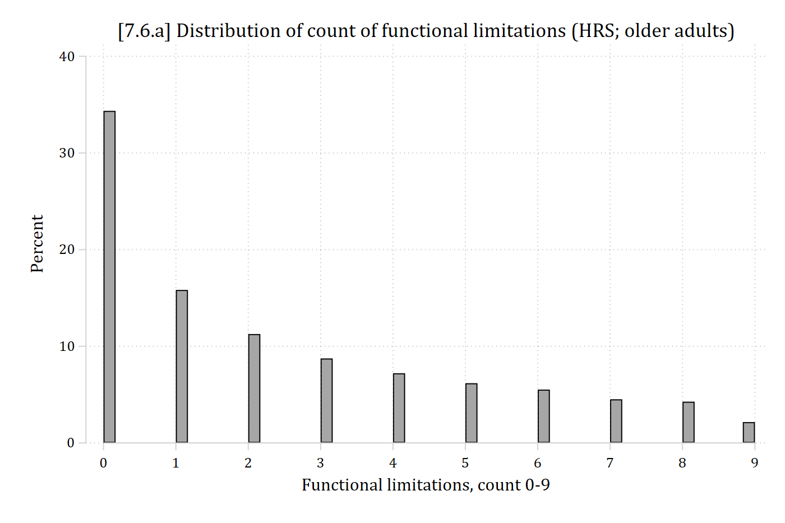
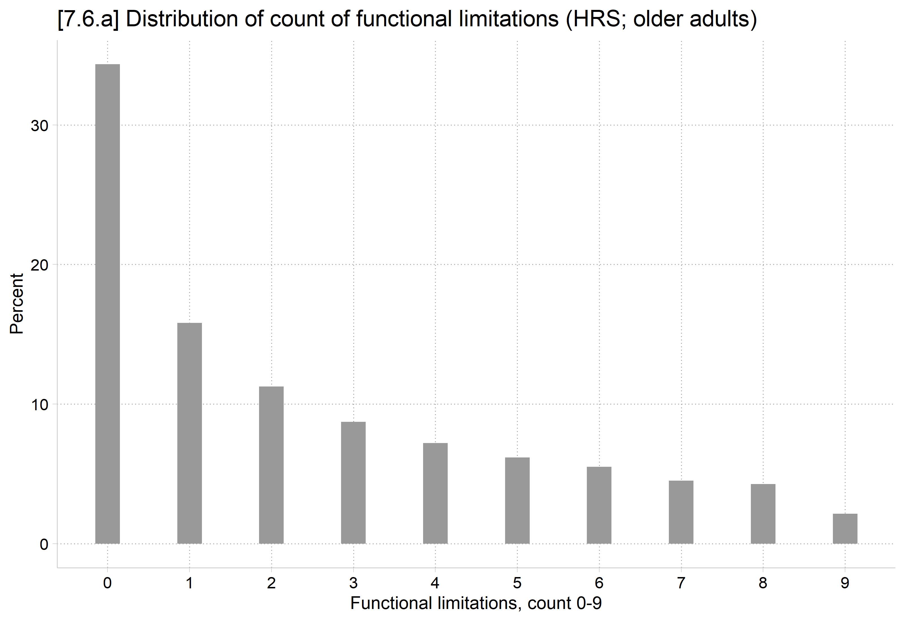
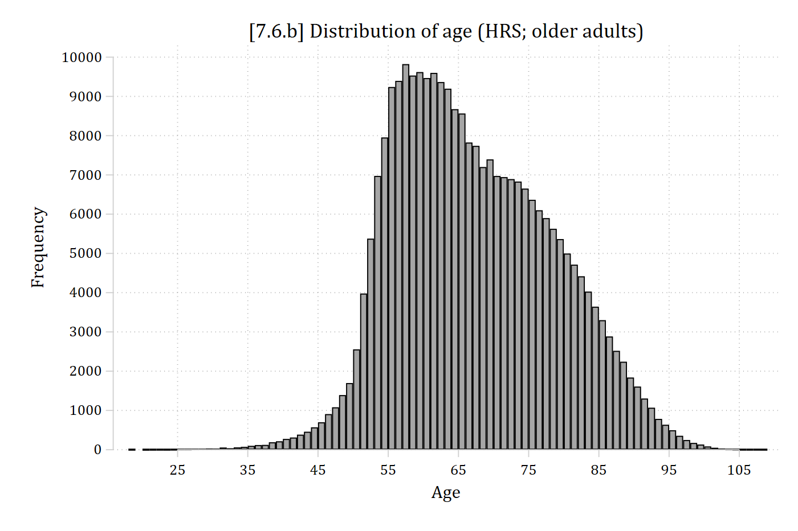
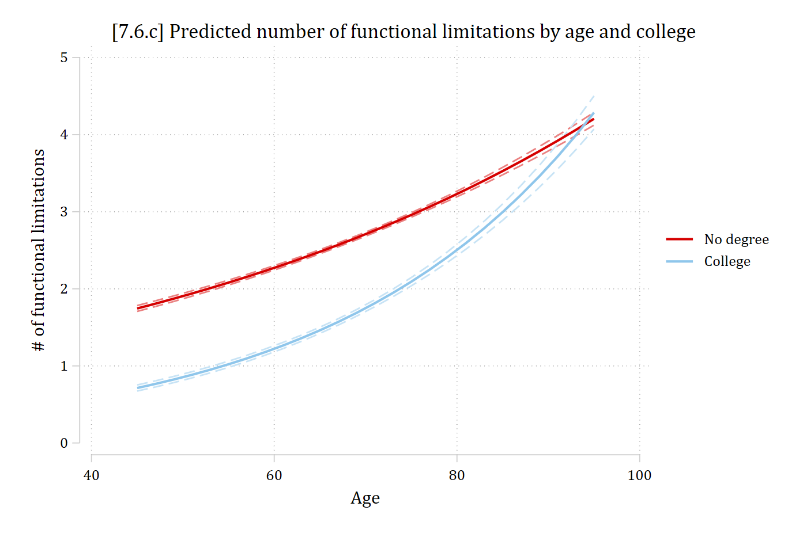
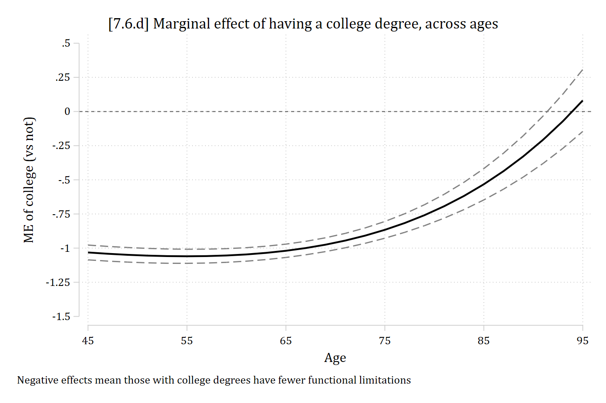

The summary recommendations from Mize (2019) in the last section apply to any nonlinear effects
These include nonlinear effects in linear regression models
It also includes all other categorical outcome models, like count, ordinal, and nominal models
Count models are treated straightforwardly just like binary models
But, more potential prediction quantities to calculate effects
E.g., Predicted rate (count) and/or Pr(y = #)
Ordinal and nominal models present multiple options
Interactions for effect on each outcome category separately
Proceed identically to binary models, but for all L outcome categories
Overall interaction effect across all outcome categories
Use total marginal effects to summarize overall effect of a focal IV
Count models
Data: Health and Retirement Study* (older adults)
Outcome: Count of functional limitations
We need to understand difficulties people may have with various activities because of a health or physical problem. Please tell me whether you have any difficulty doing each of the everyday activities that I read to you. Exclude any difficulties that you expect to last less than three months.
Walking several blocks
Walking one block
Walking across a room
Climbing several flights of stairs without resting
Climbing one flight of stairs without resting
Sitting for about two hours
Getting up from a chair after sitting for long periods
Stooping, kneeling, or crouching
Pulling or pushing large objects like a living room chair
*I’m pooling the waves and clustering the SEs on participant ID to account for repeated observations. For more serious analyses, I recommend a longitudinal/panel model
*7.6.a - distribution of outcome functional limiations counthist funclim, percent xlab(0(1)9) ///title("[7.6.a] Distribution of count of functional limitations (HRS; older adults)")
(bin=54, start=0, width=.16666667)

library(haven) # import Stata data and labelslibrary(dplyr) # data manipulationlibrary(ggplot2) # graphslibrary(sjmisc) # frequency tableslibrary(marginaleffects) # predictions and marginal effectslibrary(cleanplots) # graph schemecleanplots_defaults()hrs <-read_dta("https://tdmize.github.io/data/data/hrs_si.dta")# Data managementhrs <- hrs[c("funclim", "age", "race4cat", "wealth_w", "collegeB", "marstatB", "woman","hhidpn")]hrs <- hrs[complete.cases(hrs), ]# 7.6.a - distribution of outcome functional limiations countggplot(hrs, aes(x = funclim)) +geom_bar(aes(y =after_stat(100* count /sum(count))), width = .3, fill ="gray60") +scale_x_continuous(breaks =0:9) +labs(title ="[7.6.a] Distribution of count of functional limitations (HRS; older adults)",x ="Functional limitations, count 0-9", y ="Percent")

HRS functional limitations example
Focal IV: Age
Mean = 67
Moderating IV: College degree (=1) or not (=0)
Controls: Gender, marital status, race-ethnicity
RQ: How does aging affect physical health? Does aging have a different effect for those with and without college degrees?
RQ: Will the physical health gap between those with and without college degrees be the same across different ages? How will it change at different ages?
*7.6.b - distribution of focal IV agehist age, freq width(1) xlab(25(10)105) ylab(0(1000)10000, format(%5.0f)) ///title("[7.6.b] Distribution of age (HRS; older adults)") xtitle("Age")
(bin=91, start=18, width=1)

# 7.6.b - distribution of focal IV ageggplot(hrs, aes(x = age)) +geom_histogram(binwidth =1, fill ="gray60", color ="black") +scale_x_continuous(breaks =seq(25, 105, 10)) +scale_y_continuous(breaks =seq(0, 10000, 1000)) +labs(title ="[7.6.b] Distribution of age (HRS; older adults)", x ="Age", y ="Frequency")
// Negative binomial count model for functional limitations.quinbreg funclim c.age##i.collegeB i.race4cat i.marstatB i.woman, cluster(hhidpn)eststore flmod
# Treat binary/nominal variables as factorshrs <- hrs |>mutate(across(c(collegeB, race4cat, marstatB, woman), as_factor))# Negative binomial count model for functional limitationsflmod <- MASS::glm.nb(funclim ~ age * collegeB + race4cat + marstatB + woman, data = hrs)
Ignore the coefficient on the interaction (product) term. Count models are nonlinear and coefficients are in a different metric than the predictions. Graph predictions and test interaction in MEs.
qui margins collegeB, at(age=(45(2)95))marginsplot, /// recastci(rline) ciopt(lpat(dash) col(*.5)) plotop(msym(none) lwid(*1.5)) ///title("[7.6.c] Predicted number of functional limitations by age and college", size(*1.1)) /// ylab(0(1)5) ytitle("# of functional limitations") ///xtitle("Age") legend(order(3 "No degree" 4 "College"))
Variables that uniquely identify margins: age collegeB

# 7.6.c - Graph predicted rate/count of functional limitations# (one age at a time, which needs much less memory with 270,000+ observations)pr <-bind_rows(lapply(seq(45, 95, 2), function(a) {avg_predictions(flmod, by =c("age", "collegeB"), vcov =~hhidpn,newdata =datagrid(age = a, collegeB = unique, grid_type ="counterfactual"))}))ggplot(pr, aes(x = age, y = estimate, color = collegeB, fill = collegeB)) +geom_ribbon(aes(ymin = conf.low, ymax = conf.high), alpha = .2, color =NA) +geom_line(linewidth =1) +scale_color_discrete(labels =c("No degree", "College")) +scale_fill_discrete(labels =c("No degree", "College")) +scale_y_continuous(breaks =0:5, limits =c(0, 5)) +labs(title ="[7.6.c] Predicted number of functional limitations by age and college",x ="Age", y ="# of functional limitations", color =NULL, fill =NULL)
*AME of age for those w and w/o college degreesmecompare age, by(collegeB) amount(10) model(flmod)
Predicting: Predicted number of events
Marginal effects (N_flmod=273547)
| ME # Estimate Robust SE P>|z|
---------------------------------+---------------------------------------
age + 10 (centered) |
no bachelor's | 1 0.461 0.010 0.000
bachelor's or higher | 2 0.614 0.018 0.000
# Changes in continuous IVs centered on the observed values, like mecompareoptions(marginaleffects_contrast_direction ="center")# AME of age for those w and w/o college degreesmes <-avg_comparisons(flmod, variables =list(age =10), by ="collegeB",vcov =~hhidpn, newdata =datagrid(collegeB = unique, grid_type ="counterfactual"))mes
collegeB Estimate Std. Error z Pr(>|z|) S 2.5 % 97.5 %
no bachelor's 0.461 0.00984 46.8 <0.001 Inf 0.442 0.48
bachelor's or higher 0.614 0.01840 33.4 <0.001 808.4 0.578 0.65
Term: age
Type: response
Comparison: +10
Aging 10 years predicts a 0.46 increase in the number of functional limitations for someone without a college degree. For someone with a college degree, the same 10-year increase in age predicts a 0.61 increase.
Hypothesis Estimate Std. Error z Pr(>|z|) S 2.5 % 97.5 %
b2-b1=0 0.153 0.0205 7.47 <0.001 43.6 0.113 0.193
On average, aging has a significantly larger effect on the number of functional limitations for someone with a college degree than for someone without (p < .001).
Given the substantial nonlinearities we see in the graph, good to report interaction at different ages and not only the average effect (above)
*2nd diffs for age * college, at three ideal types of agemecompare age, by(collegeB) amount(10) start(age=(45 65 85)) model(flmod)
Predicting: Predicted number of events
Marginal effects (N_flmod=273547)
| ME # Estimate Robust SE P>|z|
---------------------------------+---------------------------------------
age + 10 (centered) |
no bachelor's at 45 | 1 0.307 0.004 0.000
no bachelor's at 65 | 2 0.437 0.009 0.000
no bachelor's at 85 | 3 0.622 0.017 0.000
bachelor's or higher at 45 | 4 0.257 0.003 0.000
bachelor's or higher at 65 | 5 0.527 0.013 0.000
bachelor's or higher at 85 | 6 1.080 0.045 0.000
qui metest, clearqui metest 1 - 4, add rowname("at age 45")qui metest 2 - 5, add rowname("at age 65")qui metest 3 - 6, add rowname("at age 85")metest, title("2nd diff. of effect of age for those w and w/o college degrees")
2nd diff. of effect of age for those w and w/o college degrees
| estimate se pvalue
---------------------------------+--------------------------------
at age 45 | 0.050 0.005 0.000
at age 65 | -0.090 0.015 0.000
at age 85 | -0.459 0.047 0.000
# 2nd diffs for age * college, at three ideal types of agemes <-avg_comparisons(flmod, variables =list(age =10), by =c("collegeB", "age"),vcov =~hhidpn, newdata =datagrid(collegeB = unique, age =c(45, 65, 85),grid_type ="counterfactual"))mes
collegeB age Estimate Std. Error z Pr(>|z|) S 2.5 % 97.5 %
no bachelor's 45 0.307 0.00389 79.1 <0.001 Inf 0.300 0.315
no bachelor's 65 0.437 0.00871 50.2 <0.001 Inf 0.420 0.454
no bachelor's 85 0.622 0.01705 36.5 <0.001 964.2 0.588 0.655
bachelor's or higher 45 0.257 0.00333 77.4 <0.001 Inf 0.251 0.264
bachelor's or higher 65 0.527 0.01286 41.0 <0.001 Inf 0.502 0.552
bachelor's or higher 85 1.080 0.04532 23.8 <0.001 414.5 0.991 1.169
Term: age
Type: response
Comparison: +10
Those without college degrees acquire more functional limitations much earlier in life than those with college degrees. But by older ages, the groups converge.
For individuals in their 40s, aging is associated with a faster increase in functional limitations for someone without a college degree. However, for someone in their 60s, those with college degrees experience a larger increase in functional limitations. By their 80s, the rate is much stronger for someone with a college degree.
*7.6.d - Other side of interaction: effect of college, at different agesestrestore flmod
(results flmod are active now)
qui margins, dydx(college) at(age=(45(2)95))marginsplot, yline(0) /// recastci(rline) ciopt(lpat(dash) col(black*.5)) /// plotop(msym(none) lcol(black) lwid(*1.5)) /// xlab(45(10)95) ylab(-1.5(.25).5) xtitle("Age") ///ytitle("ME of college (vs not)") ///title("[7.6.d] Marginal effect of having a college degree, across ages", size(*1.1)) ///note("Negative effects mean those with college degrees have fewer functional limitations", span)
Variables that uniquely identify margins: age

# 7.6.d - Other side of interaction: effect of college, at different agesmes <-bind_rows(lapply(seq(45, 95, 2), function(a) {avg_comparisons(flmod, variables ="collegeB", by ="age", vcov =~hhidpn,newdata =datagrid(age = a, grid_type ="counterfactual"))}))ggplot(mes, aes(x = age, y = estimate)) +geom_ribbon(aes(ymin = conf.low, ymax = conf.high), alpha = .2) +geom_line(linewidth =1) +geom_hline(yintercept =0, linetype ="dashed") +scale_x_continuous(breaks =seq(45, 95, 10)) +scale_y_continuous(breaks =seq(-1.5, .5, .25), limits =c(-1.5, .5)) +labs(title ="[7.6.d] Marginal effect of having a college degree, across ages",caption ="Negative effects mean those with college degrees have fewer functional limitations",x ="Age", y ="ME of college (vs not)")
*MEs of college, at empirical ideal types of age.** Moderating continuous IV values go in covariates() option of mecomparetabstat age, stat(p5 p50 p95)
Predicting: Predicted number of events
Marginal effects (N_flmod=273547)
| ME # Estimate Robust SE P>|z|
---------------------------------+---------------------------------------
collegeB |
bachelor's - no bachelo |
age=51 | 1 -1.055 0.027 0.000
age=65 | 2 -1.019 0.025 0.000
age=86 | 3 -0.486 0.063 0.000
mes <-avg_comparisons(flmod, variables ="collegeB", by ="age", vcov =~hhidpn,newdata =datagrid(age =c(51, 65, 86), grid_type ="counterfactual"))mes
age Estimate Std. Error z Pr(>|z|) S 2.5 % 97.5 %
51 -1.055 0.0273 -38.65 <0.001 Inf -1.11 -1.001
65 -1.019 0.0251 -40.58 <0.001 Inf -1.07 -0.970
86 -0.486 0.0633 -7.67 <0.001 45.7 -0.61 -0.362
Term: collegeB
Type: response
Comparison: bachelor's or higher - no bachelor's
There is a significant education gap, with those with college degrees reporting fewer functional limitations, from the 5th to 95th percentile of age (age 51 to 86). However, as Figure # shows, the gap becomes non-significant by the mid 90s.
*Compare all MEs using pwcompare option of metestmetest 1 2 3, pwcompare rownames("age 51""age 65""age 86")
| estimate se pvalue
---------------------------------+--------------------------------
age 65 vs age 51 | 0.035 0.014 0.012
age 86 vs age 51 | 0.569 0.073 0.000
age 86 vs age 65 | 0.534 0.060 0.000
The pwcompare option of metest and the ~ pairwise option of hypotheses will provide all tests of 2nd differences
The education gap shrinks at older ages. It is somewhat smaller at the median age (65) than at younger ages in the sample (51). It is over half a functional limitation smaller at the oldest ages (86), compared to at younger ages.
Ordinal and nominal models
With multi-outcome models, you can:
Test for interaction across each outcome category separately
RQ: Does parenthood have a different effect on “excellent” health for the married and the unmarried? On “good” health, etc.
Or, aggregate up to total effects across each outcome category, for the effect on the DV as a holistic construct
RQ: Does parenthood have a different effect on health for the married and the unmarried?
*7.6.e - Plot predictions at combos of married and parent, for each outcomequi margins married if parent == 0, posteststore pr_par0estrestore hmod
(results hmod are active now)
qui margins married if parent == 1, posteststore pr_par1coefplot (pr_par0, label("No Children")) (pr_par1, label("Parent")), ///xtitle("Pr(Self-Rated Health)") xlab(0(.1).6) /// ylab(1 `""Pr(Poor)""Unmarried""' 2 `""Pr(Poor)""Married""' /// 3 `""Pr(Fair)""Unmarried""' 4 `""Pr(Fair)""Married""' /// 5 `""Pr(Good)""Unmarried""' 6 `""Pr(Good)""Married""' /// 7 `""Pr(Excellent)""Unmarried""' 8 `""Pr(Excellent)""Married""') /// title("[7.6.e] Probability of self-rated health category, by marital and parental status") /// name(pr_health, replace)
# 7.6.e - Plot predictions at combos of married and parent, for each outcomepr <-avg_predictions(hlthmod, by =c("married", "parent", "group"),newdata =datagrid(married = unique, grid_type ="counterfactual")) |>mutate(row =factor(paste0("Pr(", group, ")\n", married),levels =paste0("Pr(", rep(levels(gss$healthR), each =2), ")\n",levels(gss$married))))ggplot(pr, aes(x = estimate, y = row, color = parent)) +geom_pointrange(aes(xmin = conf.low, xmax = conf.high),position =position_dodge(.4)) +scale_y_discrete(limits = rev) +scale_x_continuous(breaks =seq(0, .6, .1), limits =c(0, .6)) +labs(title ="[7.6.e] Probability of self-rated health category, by marital and parental status",x ="Pr(Self-Rated Health)", y =NULL, color =NULL)
// AMEs for each outcome categorymecompare parent, by(married) model(hmod)
Predicting: Pr(healthR)
Marginal effects (N_hmod=21662)
| ME # Estimate SE P>|z|
---------------------------------+---------------------------------------
parent |
Parent - No Children |
Poor - Not Married | 1 0.021 0.005 0.000
Poor - Married | 2 -0.001 0.006 0.868
Fair - Not Married | 3 0.021 0.009 0.013
Fair - Married | 4 0.017 0.011 0.109
Good - Not Married | 5 0.019 0.010 0.063
Good - Married | 6 0.000 0.014 0.992
Excellent - Not Married | 7 -0.061 0.009 0.000
Excellent - Married | 8 -0.016 0.013 0.202
# AMEs for each outcome categorymes
Group married Estimate Std. Error z Pr(>|z|) S 2.5 % 97.5 %
Poor Not Married 0.020814 0.00516 4.03391 <0.001 14.2 0.01070 0.03093
Poor Married -0.000966 0.00583 -0.16563 0.8685 0.2 -0.01239 0.01046
Fair Not Married 0.021244 0.00856 2.48064 0.0131 6.3 0.00446 0.03803
Fair Married 0.017172 0.01070 1.60459 0.1086 3.2 -0.00380 0.03815
Good Not Married 0.018961 0.01022 1.85563 0.0635 4.0 -0.00107 0.03899
Good Married 0.000134 0.01430 0.00935 0.9925 0.0 -0.02789 0.02816
Excellent Not Married -0.061018 0.00860 -7.09820 <0.001 39.5 -0.07787 -0.04417
Excellent Married -0.016341 0.01282 -1.27459 0.2025 2.3 -0.04147 0.00879
Term: parent
Type: probs
Comparison: Parent - No Children
These are the marginal effects of parental status, separately for the married and unmarried, across each outcome category. 2nd diff. per outcome is each pair compared (e.g. 2 - 1). See below.
“The interaction effect can be tested as the second difference or equality of the two MEs of parental status—for the unmarried and the married—for each outcome (Mize 2019). The right panel of Figure 8 shows the second difference for each outcome category. Two of the four are significant, indicating that parental status has a larger effect for unmarried than for married individuals on the probability of reporting poor or excellent health (though in opposite directions). We find no evidence of interaction for the probability of reporting fair or good health.” (Mize and Han 2025, p.146)
Total marginal effects
Although the approach above provides a valid test of interaction, it provides an ambiguous answer given differences across outcome categories
In addition, it answers a more nuanced question than “is the effect of parental status on health the same for married and unmarried individuals?”
If this broader question is of interest, total MEs can provide a holistic quantification of the effect of parental status to use in the test of interaction
In this case, we calculate two total MEs of parental status, one for the married and one for the unmarried, and then test their equality using a second difference test
With multi-outcome models, an IV’s total effect is its holistic effect across all outcomes
The total ME statistic is the sum of all the marginal effects for that IV (using absolute values) divided by two
// Calculate Total MEs to simplify interaction test //mecompare parent, by(married) totalme model(hmod)
Predicting: Pr(healthR)
Marginal effects (N_hmod=21662)
| ME # Estimate SE P>|z|
---------------------------------+---------------------------------------
parent |
Parent - No Children |
Total ME |
Not Married | 1 0.061 0.009 0.000
Married | 2 0.017 0.013 0.196
Poor - Not Married | 3 0.021 0.005 0.000
Poor - Married | 4 -0.001 0.006 0.868
Fair - Not Married | 5 0.021 0.009 0.013
Fair - Married | 6 0.017 0.011 0.109
Good - Not Married | 7 0.019 0.010 0.063
Good - Married | 8 0.000 0.014 0.992
Excellent - Not Married | 9 -0.061 0.009 0.000
Excellent - Married | 10 -0.016 0.013 0.202
# Total ME functionssource("https://raw.githubusercontent.com/tdmize/Rfunctions/main/ME_helper_functions.R")# Calculate Total MEs to simplify interaction testtme <-avg_comparisons(hlthmod, variables ="parent", by ="married",newdata =datagrid(married = unique, grid_type ="counterfactual"),hypothesis =totalme(hlthmod))tme
married Estimate Std. Error z Pr(>|z|) S 2.5 % 97.5 %
Not Married 0.0610 0.0086 7.10 <0.001 39.5 0.04417 0.0779
Married 0.0173 0.0134 1.29 0.196 2.3 -0.00895 0.0436
Term: parent
Type: probs
The total effect of parental status is 0.061 for the unmarried; that is, parents and non-parents differ by about 6 percentage points total in terms of their self-rated health. For the married, the total effect of parenthood is only 0.017.
Parental status has a larger total effect for the unmarried than for the married; that is, in terms of self-rated health, parental status matters more for those who are unmarried than for those who are married (2nd diff. = -0.044, p < .01).
![[7.6.e] Dot plot of the predicted probability of each self-rated health category (poor, fair, good, excellent) for unmarried and married respondents, with and without children. Poor health is about .03 to .08, fair about .14 to .24, good about .47 to .50, and excellent about .20 to .33. Unmarried parents have higher probabilities of poor and fair health and a lower probability of excellent health than unmarried non-parents; among the married the parent and non-parent dots are closer together.](fig/cda-07_06_e-pr_health.png)
![[7.6.e] Dot plot of the predicted probability of each self-rated health category (poor, fair, good, excellent) for unmarried and married respondents, with and without children. Poor health is about .03 to .08, fair about .14 to .24, good about .47 to .50, and excellent about .20 to .33. Unmarried parents have higher probabilities of poor and fair health and a lower probability of excellent health than unmarried non-parents; among the married the parent and non-parent dots are closer together.](7-6-count-ordinal-nominal_files/figure-html/unnamed-chunk-14-1.png)
![[7.6.h] Two panels with a line at zero. Left: marginal effects of parental status on each self-rated health category for the unmarried and the married; for the unmarried, parenthood raises the probabilities of poor, fair, and good health by about .02 each and lowers the probability of excellent health by about .06; for the married all four effects are near zero. Right: the second differences (married minus unmarried) are about -.022 for poor, -.004 for fair, -.019 for good, and .045 for excellent; the confidence intervals for poor and excellent exclude zero.](fig/cda-07_06_h-MEs_2nd_diffs.png)
![[7.6.h] Two panels with a line at zero. Left: marginal effects of parental status on each self-rated health category for the unmarried and the married; for the unmarried, parenthood raises the probabilities of poor, fair, and good health by about .02 each and lowers the probability of excellent health by about .06; for the married all four effects are near zero. Right: the second differences (married minus unmarried) are about -.022 for poor, -.004 for fair, -.019 for good, and .045 for excellent; the confidence intervals for poor and excellent exclude zero.](7-6-count-ordinal-nominal_files/figure-html/unnamed-chunk-15-1.png)